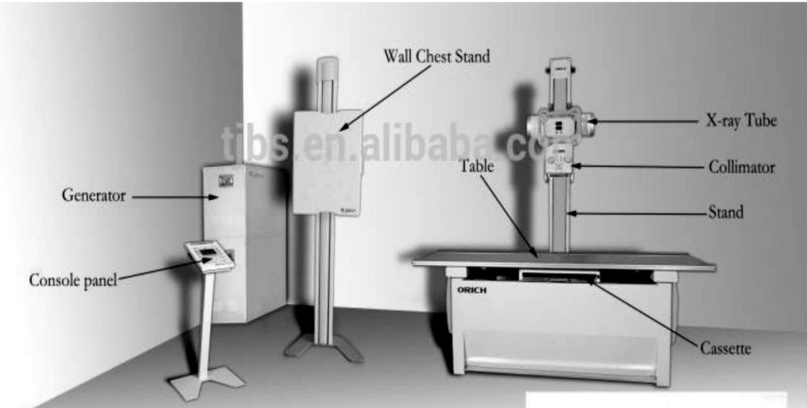
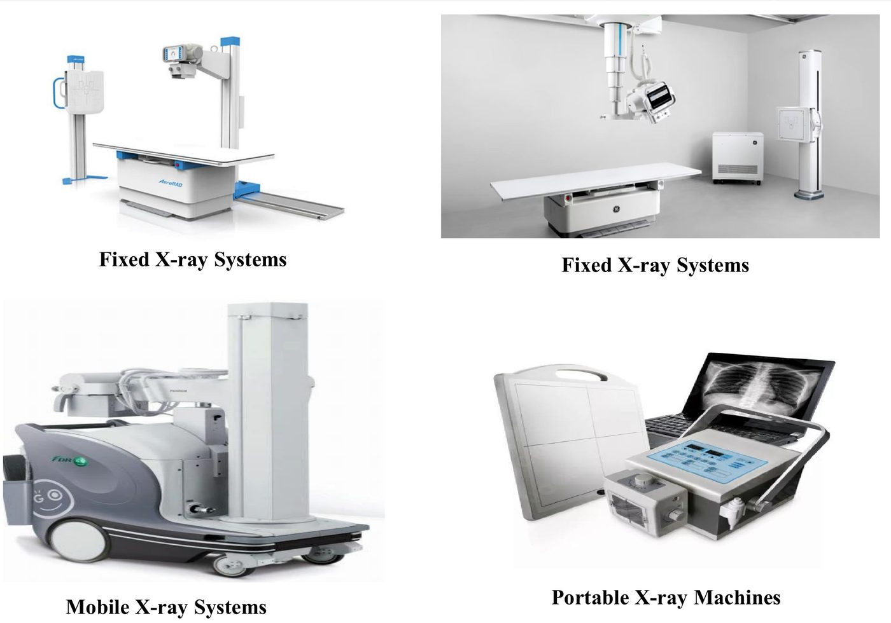
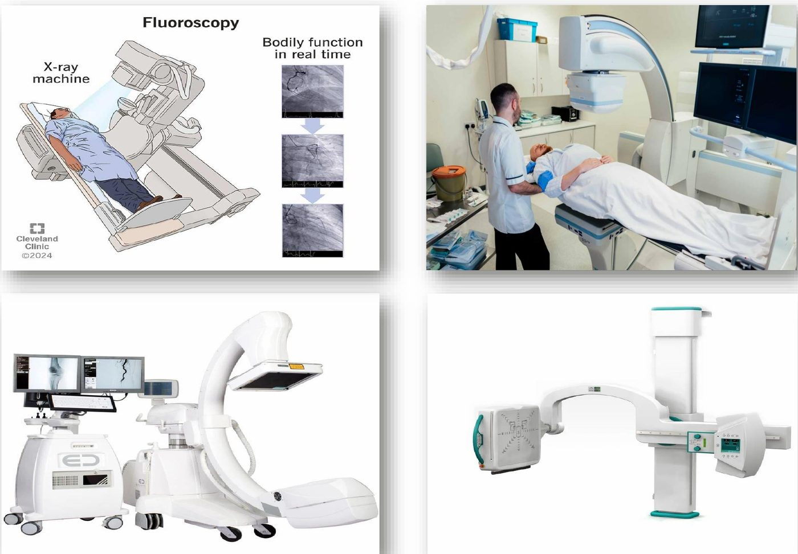
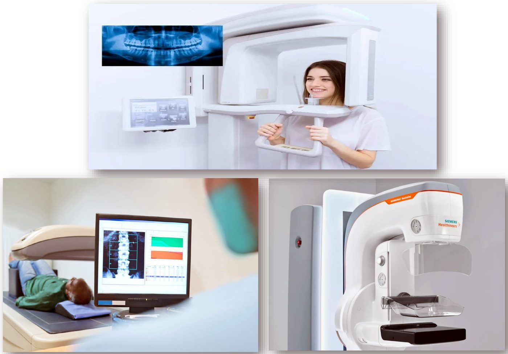
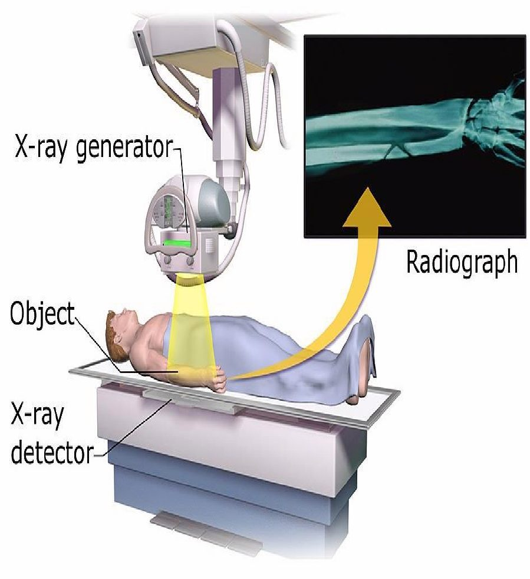
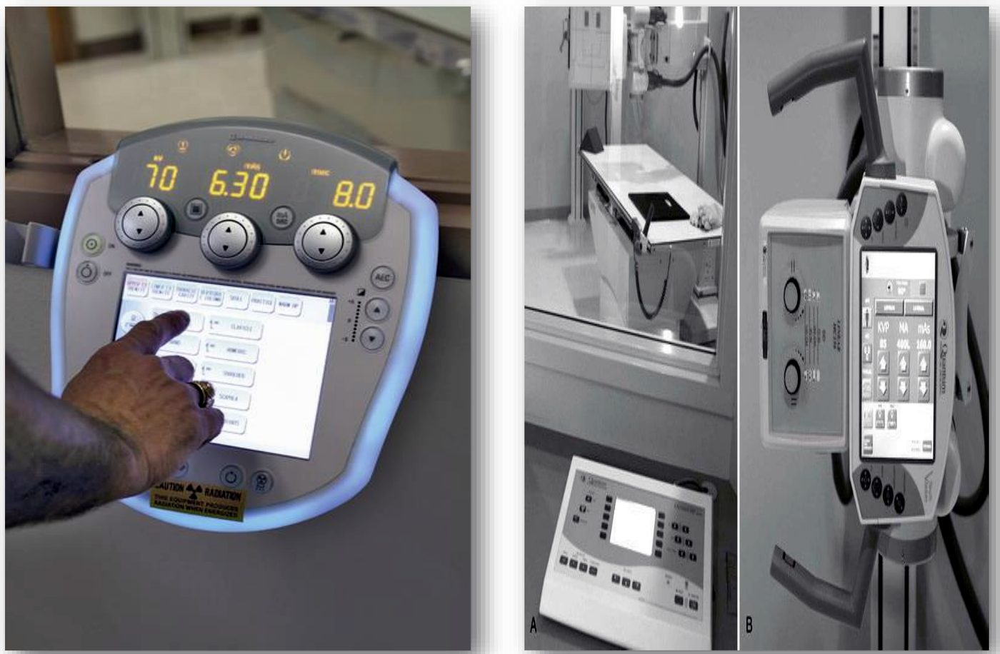
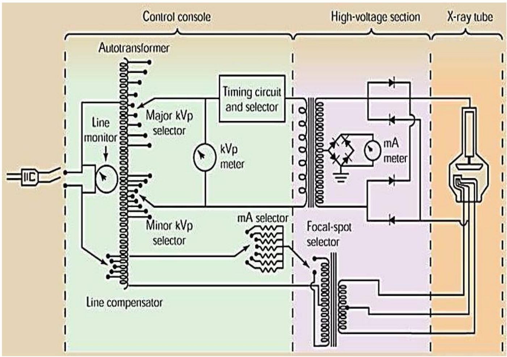
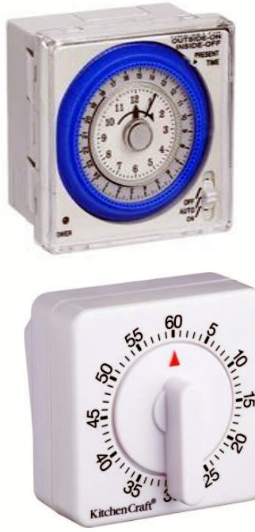
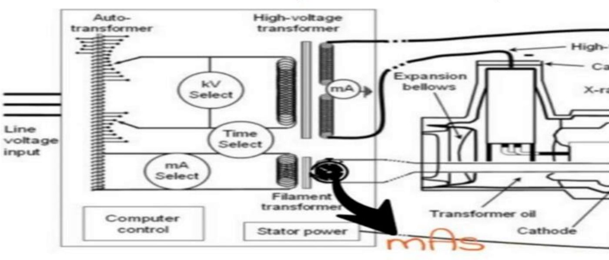
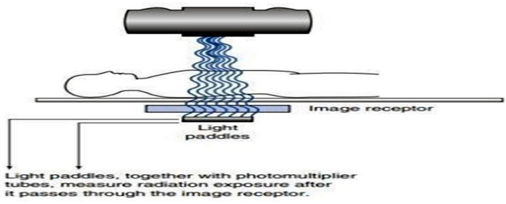

منظومة جهاز الأشعة السينية ولوحة التحكمX-Ray Machine System & the Operating Console
نظري · م01 · 14.4 دقيقةأقسام المحاضرة (9)
- العناوين والمقدمةOutlines & Introduction
- منظومة جهاز الأشعة السينيةX-Ray Machine System
- أنواع منظومات جهاز الأشعة السينيةX-Ray Machine System Types
- الأجزاء الرئيسية لجهاز الأشعة السينيةPrincipal Parts of the X-Ray Machine
- لوحة التحكم (التشغيل)The Operating Console
- منتقي الكيلوفولت وتأثيرهKilovoltage Selector & the Effect of Kilovoltage
- الملي أمبير: العدّاد والمنتقي وتأثيرهMilliammeter, Milliamperage Selector & the Effect of Milliamperage
- المؤقّت وزر التعرّضTimer and Exposure Button
- أسئلة مقترحة من الأستاذSuggested Questions
العناوين والمقدمةOutlines & Introduction
X-Ray machine system: Operating console
منظومة جهاز الأشعة السينية: لوحة التحكم (التشغيل).
- • Line compensationمعاوضة جهد الخط.
- • Autotransformerالمحوّل الذاتي.
- • KVp adjustmentضبط kVp (ذروة الجهد بالكيلوفولت).
- • mA controlالتحكم بـ mA (شدة تيار الأنبوب).
- • Exposure timerمؤقّت التعرّض.
مقدمةIntroduction
General radiography, also known as plain film radiography, is the specialty within medical imaging that utilizes projectional radiography to examine anatomy. It is often referred to as simply ‘x-ray’ within medical imaging departments.
التصوير الشعاعي العام، ويُسمّى أيضاً التصوير الشعاعي البسيط (plain film radiography)، هو الاختصاص ضمن التصوير الطبي الذي يستعمل التصوير الإسقاطي (projectional radiography) لفحص التشريح. وكثيراً ما يُسمّى في أقسام التصوير الطبي ببساطة «x-ray».
The differential absorption of X-rays in tissues and organs, owing to their atomic composition, is the basis for the various imaging methods used in diagnostic radiology.
الامتصاص التفاضلي للأشعة السينية في الأنسجة والأعضاء، بسبب تركيبها الذري، هو أساس طرق التصوير المختلفة المستعملة في الأشعة التشخيصية.
The principles in the production of X rays have remained the same since their discovery. however, much refinement has gone into the design of X-ray tubes to achieve the performance required for today’s radiological examinations.
مبادئ إنتاج الأشعة السينية بقيت نفسها منذ اكتشافها، لكن تصميم أنابيب الأشعة السينية تطوّر كثيراً حتى يعطي الأداء المطلوب لفحوصات الأشعة اليوم.
منظومة جهاز الأشعة السينيةX-Ray Machine System
An X-ray machine is a device that uses X-rays for a variety of applications including
جهاز الأشعة السينية جهاز يستعمل الأشعة السينية في تطبيقات متعددة، منها:
- 1. Medicineالطب.
- 2. X-ray fluorescenceالتألّق بالأشعة السينية (X-ray fluorescence).
- 3. Electronic assembly inspectionفحص تجميع القطع الإلكترونية.
- 4. Measurement of material thickness in manufacturing operations.قياس سُمك المواد في عمليات التصنيع.
In medical applications, X-ray machines are used by radiographers to acquire x-ray images of the internal structures (e.g., bones) of living organisms.
في التطبيقات الطبية يستعمل المصوّرون الشعاعيون أجهزة الأشعة السينية للحصول على صور للتراكيب الداخلية (مثل العظام) في الكائنات الحية.
شكل جهاز الأشعة السينية وحجمهX-Ray machine shape & size
The many different types of x-ray machines are usually identified according to either the energy of the x – rays they produce or the purpose for which those x – rays is identified.
أنواع أجهزة الأشعة السينية الكثيرة تُميَّز عادةً إمّا حسب طاقة الأشعة السينية التي تنتجها، أو حسب الغرض الذي تُستعمل له هذه الأشعة.
The radiographic x-ray tube is attached to an overhead movable crane assembly that permits easy positioning of the tube and aiming of the x-ray beam.
أنبوب الأشعة السينية الشعاعي مثبّت على رافعة علوية متحركة (overhead movable crane assembly) تسهّل تحديد مكان الأنبوب وتوجيه حزمة الأشعة.
Regardless of the type of x-ray imaging system used, a patient-supporting examination couch is required.
مهما كان نوع منظومة التصوير بالأشعة السينية، نحتاج سرير فحص يسند المريض.
This examination couch may be flat or curved but must be uniform in thickness and as transparent to x-rays as possible. Carbon fiber couches are strong and absorb little x-radiation. This contributes to reduced patient radiation dose. Most patient couches are floating—easily unlocked and moved by the radiologic technologist—or motor driven. Just under the couch is an opening to hold a thin tray for a cassette and grid.
سرير الفحص قد يكون مستوياً أو مقوّساً، لكن يجب أن يكون منتظم السُّمك وشفّافاً للأشعة السينية قدر الإمكان. الأسرّة المصنوعة من ألياف الكربون (carbon fiber) قوية وتمتص قليلاً من الأشعة، وهذا يقلّل جرعة المريض. أغلب الأسرّة «عائمة» (floating): يفكّ المصوّر قفلها ويحرّكها بسهولة، أو تتحرك بمحرّك. وتحت السرير مباشرةً فتحة لصينية رقيقة تحمل الكاسيت (cassette) والشبكة (grid).

The function of the x-ray machine is to provide a sufficient intensity of electron flow in a controlled manner to produce an X – ray beam of desired quantity and quality.
وظيفة جهاز الأشعة السينية أن يوفّر سرياناً كافياً من الإلكترونات بطريقة مسيطَر عليها، لإنتاج حزمة أشعة سينية بالكمية والنوعية المطلوبتين.
Conventional X-ray radiography produces images of anatomy that are shadowgrams based on X-ray absorption.
التصوير الشعاعي التقليدي ينتج صوراً للتشريح هي «صور ظلّية» (shadowgrams) مبنية على امتصاص الأشعة السينية.
The X-rays are produced in a region that is nearly a point source and then are directed on the anatomy to be imaged.
الأشعة السينية تُنتَج في منطقة تكاد تكون مصدراً نقطياً، ثم توجَّه إلى الجزء المراد تصويره.
The x-rays emerging from the anatomy are detected to form a two-dimensional image, where each point in the image has a brightness related to the intensity of the X-rays at that point.
الأشعة الخارجة من الجسم تُكشَف لتكوين صورة ثنائية الأبعاد، كل نقطة فيها سطوعها مرتبط بشدة الأشعة عند تلك النقطة.
Image production relies on the fact that significant numbers of X-rays penetrate through the anatomy and that different parts of the anatomy absorb different amounts of X-rays.
تكوين الصورة يعتمد على أمرين: أن عدداً كبيراً من الأشعة ينفذ عبر الجسم، وأن أجزاء الجسم المختلفة تمتص كميات مختلفة من الأشعة.
أنواع منظومات جهاز الأشعة السينيةX-Ray Machine System Types
حسب الحركة وطريقة التركيبBy Mobility/Installation
- • Fixed X-ray Systems: High-power, stationary units in dedicated rooms, often floor-mounted or ceiling-mounted.الأجهزة الثابتة: وحدات عالية القدرة ثابتة في غرف مخصّصة، غالباً مثبّتة على الأرض أو بالسقف.
- • Mobile X-ray Systems: Motorized, wheel-based units for in-ward imaging.الأجهزة المتنقّلة (Mobile): وحدات بعجلات ومحرّك للتصوير داخل الردهات.
- • Portable X-ray Machines: Compact, lightweight, and hand-carried units for field use.الأجهزة المحمولة (Portable): وحدات صغيرة خفيفة تُحمل باليد للاستعمال الميداني.

حسب التقنيةBy Technology
- • Traditional/Analog: Uses traditional, non-digital film.التقليدي (التناظري): يستعمل الفلم التقليدي غير الرقمي.
- • Digital Radiography (DR): Uses digital sensors for immediate image acquisition.التصوير الشعاعي الرقمي DR: يستعمل مستشعرات رقمية فتظهر الصورة فوراً.
- • Computed Tomography (CT) Scanners: Produces 3D, cross-sectional images.أجهزة المفراس CT: تنتج صوراً مقطعية وثلاثية الأبعاد.
حسب الوظيفة والاستعمالBy Function/Application
- • Fluoroscopy Systems: Provides real-time, continuous X-ray imaging.أجهزة التنظير الشعاعي (Fluoroscopy): تصوير مستمر بالوقت الحقيقي.
- • C-arm Systems: Mobile fluoroscopy machines used in operating rooms.أجهزة C-arm: أجهزة تنظير متنقّلة تُستعمل في صالات العمليات.
- • U-arm Systems: Versatile, motorized systems with the tube and detector mounted on a rotating U-shaped arm.أجهزة U-arm: أجهزة متعددة الاستعمال بمحرّك، الأنبوب والكاشف فيها مثبّتان على ذراع دوّارة بشكل حرف U.
- • Mammography Systems: Specialized, low-dose systems for breast imaging.أجهزة تصوير الثدي (Mammography): أجهزة متخصصة قليلة الجرعة لتصوير الثدي.
- • Dental Systems: Includes intraoral (inside the mouth) and extraoral (panoramic/cephalometric) machines.أجهزة الأسنان: منها داخل الفم (intraoral) وخارج الفم (extraoral: البانورامي وتصوير الجمجمة الجانبي cephalometric).
- • DEXA Scanners: Used to measure bone mineral density.أجهزة DEXA: لقياس كثافة المعادن في العظم.


الأجزاء الرئيسية لجهاز الأشعة السينيةPrincipal Parts of the X-Ray Machine
Every x-ray machine, regardless of its design, has three principal parts
كل جهاز أشعة سينية، مهما كان تصميمه، له ثلاثة أجزاء رئيسية:
- 1. The control consoleلوحة التحكم.
- 2. The high – voltage generatorمولّد الجهد العالي.
- 3. the x-ray tubeأنبوب الأشعة السينية.
In of x-ray apparatus, such as dental and portable machines, these three components are housed compactly. Most, however , have the head of the x-ray tube located in one room , the control console in an adjoining room, and a protective barrier Fig (2): Principal parts of X – ray machine. separating the two.
في بعض أجهزة الأشعة، مثل أجهزة الأسنان والأجهزة المحمولة، تكون هذه الأجزاء الثلاثة مجمّعة في هيكل صغير واحد. أما أغلب الأجهزة فرأس الأنبوب فيها بغرفة، ولوحة التحكم بغرفة مجاورة، وبينهما حاجز واقٍ.

لوحة التحكم (التشغيل)The Operating Console
In medical imaging applications, an X-ray machine has a control console that is used by a radiologic technologist to select X-ray techniques suitable for the specific exam, a power supply that creates and produces the desired kVp (peak kilovoltage), mA (milliamperes, sometimes referred to as mAs which is actually mA multiplied by the desired exposure length) for the X-ray tube, and the X-ray tube itself.
في التصوير الطبي، لجهاز الأشعة لوحة تحكم يستعملها المصوّر الشعاعي لاختيار عوامل التعرّض المناسبة للفحص، ومصدر طاقة يولّد قيم kVp (ذروة الجهد بالكيلوفولت) وmA (الملي أمبير؛ وأحياناً يُقال mAs وهو حاصل ضرب mA في زمن التعرّض) لأنبوب الأشعة، ثم الأنبوب نفسه.
The operating console is the technician's "cockpit", allowing control of X-ray tube voltage (kVp), current (mA), and exposure time to determine beam intensity and penetration. The console allows a technologist to establish an x-ray beam of adequate quantity (number of x-ray photons) and quality (effective energy of xray photons)
لوحة التحكم هي «قمرة القيادة» للمصوّر: منها يتحكم بجهد الأنبوب (kVp) وتياره (mA) وزمن التعرّض، فيحدّد شدة الحزمة وقدرتها على النفاذ. وتسمح للمصوّر بتكوين حزمة بكمية مناسبة (عدد الفوتونات) ونوعية مناسبة (الطاقة الفعّالة للفوتونات).

The console usually provides control of line compensation, KVp, mA, and exposure time. It is a separate unit connected electrically to the X-ray machine.
لوحة التحكم عادةً تتحكم بمعاوضة الخط، وkVp، وmA، وزمن التعرّض. وهي وحدة منفصلة موصولة كهربائياً بجهاز الأشعة.
Control of x-ray energy and quantity is attained through adjustments of the voltage potential in kilovolts (kV), the x-ray tube current in milliamperes (mA), and the exposure time in seconds (s), by meters and switches contained in the operating console to select kVp, mA and exposure time, respectively.
التحكم بطاقة الأشعة وكميتها يكون بضبط فرق الجهد بالكيلوفولت (kV)، وتيار الأنبوب بالملي أمبير (mA)، وزمن التعرّض بالثواني (s)، بواسطة عدّادات ومفاتيح في لوحة التحكم لاختيار kVp وmA وزمن التعرّض على التوالي.
Several electrical circuits and voltage transformers within the x-ray generator assembly provides this capability. Figure 3 & 4 illustrates the major x-ray operating console components.
هذه القدرة توفّرها عدة دوائر كهربائية ومحوّلات جهد داخل مجموعة مولّد الأشعة. الشكلان 3 و4 يوضّحان أهم مكوّنات لوحة التحكم.

معوّض الجهد (معاوضة الخط)Voltage compensator control (Line Compensation)
The line compensation compensates the incoming voltage so that a constant voltage may be used during exposure and not a varying voltage.
معوّض الخط يعوّض الجهد الداخل حتى يُستعمل جهد ثابت أثناء التعرّض بدل جهد متغيّر.
Most x-ray machines are designed to operate on a 220 V power source, although some can operate on 110 V or 440 V. Unfortunately, power companies are not capable of providing 220 V accurately and continuously. Because of variations in power distribution to the hospital and in power consumption by the various sections of the hospital, such variation in input voltage results in larger variation in x-ray output, which is unacceptable if high-quality radiographs are to be consistently produced.
أغلب أجهزة الأشعة مصمّمة لتعمل على مصدر 220 فولت، وبعضها يعمل على 110 أو 440 فولت. لكن شركات الكهرباء لا تستطيع توفير 220 فولت بدقة وباستمرار. وبسبب تغيّرات توزيع الكهرباء للمستشفى واستهلاك أقسامها المختلفة، يتغيّر الجهد الداخل، وهذا يسبّب تغيّراً أكبر في ناتج الأشعة، وهو غير مقبول إذا أردنا صوراً شعاعية عالية الجودة باستمرار.
The line Compensator incorporates a voltmeter to measure the voltage provided to the unit and a control to adjust that voltage to precisely 220 V. The control is wired to the autotransformer shown in (Fig. 4). In most machines these days such a system is automatic.
معوّض الخط فيه فولتميتر يقيس الجهد الواصل للجهاز، ومفتاح لضبط هذا الجهد إلى 220 فولت بالضبط. المفتاح موصول بالمحوّل الذاتي (autotransformer) المبيّن في الشكل (4). وفي أغلب الأجهزة اليوم هذا النظام تلقائي.
منتقي الكيلوفولت وتأثيرهKilovoltage Selector & the Effect of Kilovoltage
It allows precise selection of desired kV.
يسمح باختيار قيمة الكيلوفولت المطلوبة بدقة.
In some machines, this control is automatically linked to a certain milliamperage (mA) value. In such a case, a high kVp is available at a relatively low mA and vice versa.
في بعض الأجهزة يرتبط هذا المفتاح تلقائياً بقيمة معيّنة من mA؛ فيكون الكيلوفولت العالي متاحاً مع ملي أمبير منخفض نسبياً، والعكس.
In the modern type of X-ray apparatus and in those operating on a pre-determined milliamperge, the kilovoltage control will be directly calibrated, so that the described value can be easily selected.
في أجهزة الأشعة الحديثة، وفي الأجهزة التي تعمل على ملي أمبير محدّد مسبقاً، يكون مفتاح الكيلوفولت معايَراً مباشرةً، فيسهل اختيار القيمة المطلوبة.
تأثير الكيلوفولتThe effect of kilovoltage
As already stated, it is the passage of a high voltage current across an x-ray tube which results in a production of X-rays.
كما ذكرنا، مرور تيار بجهد عالٍ عبر أنبوب الأشعة هو الذي ينتج الأشعة السينية.
The higher the kilovoltage employed for this purpose, the more rapidly the electrons travel, the greater the amount of energy released on impact and the shorter the wavelength of the X-rays produced.
كلما زاد الكيلوفولت: تسرع الإلكترونات أكثر، وتزيد الطاقة المتحرّرة عند الاصطدام، ويقصر الطول الموجي للأشعة الناتجة.
- 1. X-rays of short wavelength (high frequency) are sometimes described as " hard X-rays "الأشعة قصيرة الطول الموجي (عالية التردد) تُسمّى أحياناً «الأشعة الصلبة» (hard X-rays).
- 2. X-rays of long wavelength (low frequency) may be spoken of as " soft X-ray ".الأشعة طويلة الطول الموجي (منخفضة التردد) تُسمّى «الأشعة الليّنة» (soft X-rays).
الملي أمبير: العدّاد والمنتقي وتأثيرهMilliammeter, Milliamperage Selector & the Effect of Milliamperage
X – Ray tube current is controlled through a separate circuit called filament circuit. It indicates the current passing through the tube during an actual X-ray exposure. The voltage of the filament circuit is provided from taps of the autotransformer.
تيار أنبوب الأشعة يُتحكَّم به عبر دائرة منفصلة اسمها دائرة الفتيلة (filament circuit). والعدّاد يبيّن التيار المارّ في الأنبوب أثناء التعرّض الفعلي. وجهد دائرة الفتيلة يُؤخذ من مآخذ (taps) المحوّل الذاتي.
The significance of the milliamperge is that it affects the amount of X-rays produced, and a level has to be selected which is sufficient to produce an easily recognizable image on the X-ray film.
أهمية الملي أمبير أنه يؤثّر في كمية الأشعة المنتَجة، ولا بدّ من اختيار مستوى يكفي لإنتاج صورة واضحة يسهل تمييزها على الفلم.
The amount of radiation is also controlled by the length of the exposure and is best expressed in milliampere-seconds (i.e., the milliamperge multiplied by the time in seconds).
كمية الأشعة تتحدّد أيضاً بطول زمن التعرّض، وأفضل تعبير عنها هو الملي أمبير-ثانية mAs (أي الملي أمبير مضروباً في الزمن بالثواني).
تأثير الملي أمبيرThe effect of milliamperage
The amount of current which travels across an X-ray tube during an exposure depends on the number of electrons available to carry that current, which in turn varies with the current supplies to the filament in the cathode. The tube current (measured in milliamperes) is directly related to the amount of X-rays produced.
كمية التيار التي تعبر أنبوب الأشعة أثناء التعرّض تعتمد على عدد الإلكترونات المتوفّرة لحمل هذا التيار، وهذا يتغيّر بحسب التيار الداخل إلى الفتيلة في الكاثود. وتيار الأنبوب (بالملي أمبير) يرتبط مباشرةً بكمية الأشعة المنتَجة.
The above effect is often summarized by stating that kilovoltage affects the quality and the miiliamperge (more correctly the mAs) the quantity of the X-ray produced by a particular apparatus.
يُلخَّص هذا عادةً بقولنا: الكيلوفولت يؤثّر في نوعية الأشعة، والملي أمبير (والأدق mAs) يؤثّر في كميتها.
المؤقّت وزر التعرّضTimer and Exposure Button
X-ray exposure timers are critical components in the high-voltage circuit that control the duration of radiation emission, regulating the total number of photons produced.
مؤقّتات التعرّض مكوّنات حيوية في دائرة الجهد العالي، تتحكم بمدة انبعاث الأشعة، فتنظّم العدد الكلي للفوتونات المنتَجة.
They ensure precise, safe imaging by controlling the length of time (measured in seconds, ms, or pulses) that current (mA) flows through the tube, which directly impacts image receptor exposure.
تضمن تصويراً دقيقاً وآمناً بالتحكم بطول الزمن (بالثواني أو الملي ثانية أو النبضات) الذي يمرّ فيه التيار (mA) في الأنبوب، وهذا يؤثّر مباشرةً في تعرّض مستقبِل الصورة.
In any given radiographic examination, the quantity of X-rays reaching the film is directly related to the X-ray tube current and the time for which the tube is energized i.e. the exposure time.
في أي فحص شعاعي، كمية الأشعة الواصلة للفلم ترتبط مباشرةً بتيار الأنبوب وبالزمن الذي يُشغَّل فيه الأنبوب، أي زمن التعرّض.
Exposure timing circuitry starts and ends the application of high voltage across the x-ray tube electrodes. The timer is located on the control console and is electrically connected to the exposure switch.
دائرة توقيت التعرّض تبدأ وتنهي تطبيق الجهد العالي بين قطبَي أنبوب الأشعة. المؤقّت موجود على لوحة التحكم وموصول كهربائياً بمفتاح التعرّض.
Exposure duration, defined as the time of x-rays that being produced for image formation, varies depending on the diagnostic imaging procedure and modality being used.
مدة التعرّض (زمن إنتاج الأشعة لتكوين الصورة) تختلف حسب إجراء التصوير التشخيصي والجهاز المستعمل.
For radiography, exposure durations are extremely short, typically 100 ms, combined with large tube current (200 –1,000 mA) to achieve high photon fluence. The electronic timer provides an accurate control of exposure, which can reduce voluntary and involuntary patient motion artifacts and preserve image quality.
في التصوير الشعاعي تكون مدة التعرّض قصيرة جداً، عادةً 100 ملي ثانية، مع تيار أنبوب كبير (200–1000 mA) للحصول على تدفّق فوتونات عالٍ. والمؤقّت الإلكتروني يعطي تحكماً دقيقاً بالتعرّض، فيقلّل تشوّهات حركة المريض الإرادية واللاإرادية ويحافظ على جودة الصورة.
خمسة أنواع أساسية لدوائر التوقيتThere are five basic types of timing circuits
- 1. Mechanical timerالمؤقّت الميكانيكي.
- 2. Synchronous timersالمؤقّتات المتزامنة.
- 3. Electronic timersالمؤقّتات الإلكترونية.
- 4. mAs timersمؤقّتات mAs.
- 5. Automatic exposure control timers (AEC) (phototimers)مؤقّتات التحكم التلقائي بالتعرّض AEC (المؤقّتات الضوئية phototimers).



أسئلة مقترحة من الأستاذSuggested Questions
- 1. What does ( General Radiography) primarily refer to in medical imaging departments?إلى ماذا يشير مصطلح «التصوير الشعاعي العام» أساساً في أقسام التصوير الطبي؟
- 2. What is the fundamental principle behind different imaging methods in diagnostic radiology?ما المبدأ الأساسي لطرق التصوير المختلفة في الأشعة التشخيصية؟
- 3. How are different types of X-ray machines usually identified?كيف تُميَّز أنواع أجهزة الأشعة السينية عادةً؟
- 4. What is the primary function of the X-ray machine?ما الوظيفة الأساسية لجهاز الأشعة السينية؟
- 5. In which types of X-ray machines are the three principal parts usually housed compactly together?في أي أنواع الأجهزة تكون الأجزاء الرئيسية الثلاثة مجمّعة معاً؟
- 6. Which parameters can be adjusted at the X-ray machine’s control console to regulate the energy and quantity of X-rays?ما العوامل التي تُضبط من لوحة التحكم لتنظيم طاقة الأشعة وكميتها؟
- 7. What is the main function of the kilovoltage selector in an X-ray machine?ما الوظيفة الأساسية لمنتقي الكيلوفولت؟
- 8. What happens when a higher kilovoltage (kVp) is employed in X-ray production?ماذا يحدث عند استعمال كيلوفولت أعلى في إنتاج الأشعة؟
- 9. What does the tube current (measured in milliamperes, mA) directly determine in X-ray production?ماذا يحدّد تيار الأنبوب (mA) مباشرةً في إنتاج الأشعة؟
- 10. What is the primary function of the X-ray exposure timer?ما الوظيفة الأساسية لمؤقّت التعرّض؟


المحاضرة مسموعة
نص الأستاذ بالإنكليزي مثل الأصل · 14.4 دقيقة. اضغط أي جملة تسمعها، أو مصطلح منقّط تسمع لفظه ومعناه.
Outlines & Introductionالعناوين والمقدمة
Outlines & Introduction
X-Ray machine system: Operating console
Line compensation
Autotransformer
KVp adjustment
mA control
Exposure timer
Introduction
General radiography, also known as plain film radiography, is the specialty within medical imaging that utilizes projectional radiography to examine anatomy. It is often referred to as simply ‘x-ray’ within medical imaging departments.
The differential absorption of X-rays in tissues and organs, owing to their atomic composition, is the basis for the various imaging methods used in diagnostic radiology.
The principles in the production of X rays have remained the same since their discovery. however, much refinement has gone into the design of X-ray tubes to achieve the performance required for today’s radiological examinations.
X-Ray Machine Systemمنظومة جهاز الأشعة السينية
X-Ray Machine System
An X-ray machine is a device that uses X-rays for a variety of applications including
Medicine
X-ray fluorescence
Electronic assembly inspection
Measurement of material thickness in manufacturing operations.
In medical applications, X-ray machines are used by radiographers to acquire x-ray images of the internal structures (e.g., bones) of living organisms.
X-Ray machine shape & size
The many different types of x-ray machines are usually identified according to either the energy of the x – rays they produce or the purpose for which those x – rays is identified.
The radiographic x-ray tube is attached to an overhead movable crane assembly that permits easy positioning of the tube and aiming of the x-ray beam.
Regardless of the type of x-ray imaging system used, a patient-supporting examination couch is required.
This examination couch may be flat or curved but must be uniform in thickness and as transparent to x-rays as possible. Carbon fiber couches are strong and absorb little x-radiation. This contributes to reduced patient radiation dose. Most patient couches are floating—easily unlocked and moved by the radiologic technologist—or motor driven. Just under the couch is an opening to hold a thin tray for a cassette and grid.
The function of the x-ray machine is to provide a sufficient intensity of electron flow in a controlled manner to produce an X – ray beam of desired quantity and quality.
Conventional X-ray radiography produces images of anatomy that are shadowgrams based on X-ray absorption.
The X-rays are produced in a region that is nearly a point source and then are directed on the anatomy to be imaged.
The x-rays emerging from the anatomy are detected to form a two-dimensional image, where each point in the image has a brightness related to the intensity of the X-rays at that point.
Image production relies on the fact that significant numbers of X-rays penetrate through the anatomy and that different parts of the anatomy absorb different amounts of X-rays.
X-Ray Machine System Typesأنواع منظومات جهاز الأشعة السينية
X-Ray Machine System Types
By Mobility/Installation
Fixed X-ray Systems: High-power, stationary units in dedicated rooms, often floor-mounted or ceiling-mounted.
Mobile X-ray Systems: Motorized, wheel-based units for in-ward imaging.
Portable X-ray Machines: Compact, lightweight, and hand-carried units for field use.
By Technology
Traditional/Analog: Uses traditional, non-digital film.
Digital Radiography (DR): Uses digital sensors for immediate image acquisition.
Computed Tomography (CT) Scanners: Produces 3D, cross-sectional images.
By Function/Application
Fluoroscopy Systems: Provides real-time, continuous X-ray imaging.
C-arm Systems: Mobile fluoroscopy machines used in operating rooms.
U-arm Systems: Versatile, motorized systems with the tube and detector mounted on a rotating U-shaped arm.
Mammography Systems: Specialized, low-dose systems for breast imaging.
Dental Systems: Includes intraoral (inside the mouth) and extraoral (panoramic/cephalometric) machines.
DEXA Scanners: Used to measure bone mineral density.
Principal Parts of the X-Ray Machineالأجزاء الرئيسية لجهاز الأشعة السينية
Principal Parts of the X-Ray Machine
Every x-ray machine, regardless of its design, has three principal parts
The control console
The high – voltage generator
the x-ray tube
In of x-ray apparatus, such as dental and portable machines, these three components are housed compactly. Most, however , have the head of the x-ray tube located in one room , the control console in an adjoining room, and a protective barrier Fig (2): Principal parts of X – ray machine. separating the two.
The Operating Consoleلوحة التحكم (التشغيل)
The Operating Console
In medical imaging applications, an X-ray machine has a control console that is used by a radiologic technologist to select X-ray techniques suitable for the specific exam, a power supply that creates and produces the desired kVp (peak kilovoltage), mA (milliamperes, sometimes referred to as mAs which is actually mA multiplied by the desired exposure length) for the X-ray tube, and the X-ray tube itself.
The operating console is the technician's "cockpit", allowing control of X-ray tube voltage (kVp), current (mA), and exposure time to determine beam intensity and penetration. The console allows a technologist to establish an x-ray beam of adequate quantity (number of x-ray photons) and quality (effective energy of xray photons)
The console usually provides control of line compensation, KVp, mA, and exposure time. It is a separate unit connected electrically to the X-ray machine.
Control of x-ray energy and quantity is attained through adjustments of the voltage potential in kilovolts (kV), the x-ray tube current in milliamperes (mA), and the exposure time in seconds (s), by meters and switches contained in the operating console to select kVp, mA and exposure time, respectively.
Several electrical circuits and voltage transformers within the x-ray generator assembly provides this capability. Figure 3 & 4 illustrates the major x-ray operating console components.
Voltage compensator control (Line Compensation)
The line compensation compensates the incoming voltage so that a constant voltage may be used during exposure and not a varying voltage.
Most x-ray machines are designed to operate on a 220 V power source, although some can operate on 110 V or 440 V. Unfortunately, power companies are not capable of providing 220 V accurately and continuously. Because of variations in power distribution to the hospital and in power consumption by the various sections of the hospital, such variation in input voltage results in larger variation in x-ray output, which is unacceptable if high-quality radiographs are to be consistently produced.
The line Compensator incorporates a voltmeter to measure the voltage provided to the unit and a control to adjust that voltage to precisely 220 V. The control is wired to the autotransformer shown in (Fig. 4). In most machines these days such a system is automatic.
Kilovoltage Selector & the Effect of Kilovoltageمنتقي الكيلوفولت وتأثيره
Kilovoltage Selector & the Effect of Kilovoltage
It allows precise selection of desired kV.
In some machines, this control is automatically linked to a certain milliamperage (mA) value. In such a case, a high kVp is available at a relatively low mA and vice versa.
In the modern type of X-ray apparatus and in those operating on a pre-determined milliamperge, the kilovoltage control will be directly calibrated, so that the described value can be easily selected.
The effect of kilovoltage
As already stated, it is the passage of a high voltage current across an x-ray tube which results in a production of X-rays.
The higher the kilovoltage employed for this purpose, the more rapidly the electrons travel, the greater the amount of energy released on impact and the shorter the wavelength of the X-rays produced.
X-rays of short wavelength (high frequency) are sometimes described as " hard X-rays "
X-rays of long wavelength (low frequency) may be spoken of as " soft X-ray ".
Milliammeter, Milliamperage Selector & the Effect of Milliamperageالملي أمبير: العدّاد والمنتقي وتأثيره
Milliammeter, Milliamperage Selector & the Effect of Milliamperage
X – Ray tube current is controlled through a separate circuit called filament circuit. It indicates the current passing through the tube during an actual X-ray exposure. The voltage of the filament circuit is provided from taps of the autotransformer.
The significance of the milliamperge is that it affects the amount of X-rays produced, and a level has to be selected which is sufficient to produce an easily recognizable image on the X-ray film.
The amount of radiation is also controlled by the length of the exposure and is best expressed in milliampere-seconds (i.e., the milliamperge multiplied by the time in seconds).
The effect of milliamperage
The amount of current which travels across an X-ray tube during an exposure depends on the number of electrons available to carry that current, which in turn varies with the current supplies to the filament in the cathode. The tube current (measured in milliamperes) is directly related to the amount of X-rays produced.
The above effect is often summarized by stating that kilovoltage affects the quality and the miiliamperge (more correctly the mAs) the quantity of the X-ray produced by a particular apparatus.
Timer and Exposure Buttonالمؤقّت وزر التعرّض
Timer and Exposure Button
X-ray exposure timers are critical components in the high-voltage circuit that control the duration of radiation emission, regulating the total number of photons produced.
They ensure precise, safe imaging by controlling the length of time (measured in seconds, ms, or pulses) that current (mA) flows through the tube, which directly impacts image receptor exposure.
In any given radiographic examination, the quantity of X-rays reaching the film is directly related to the X-ray tube current and the time for which the tube is energized i.e. the exposure time.
Exposure timing circuitry starts and ends the application of high voltage across the x-ray tube electrodes. The timer is located on the control console and is electrically connected to the exposure switch.
Exposure duration, defined as the time of x-rays that being produced for image formation, varies depending on the diagnostic imaging procedure and modality being used.
For radiography, exposure durations are extremely short, typically 100 ms, combined with large tube current (200 –1,000 mA) to achieve high photon fluence. The electronic timer provides an accurate control of exposure, which can reduce voluntary and involuntary patient motion artifacts and preserve image quality.
There are five basic types of timing circuits
Mechanical timer
Synchronous timers
Electronic timers
mAs timers
Automatic exposure control timers (AEC) (phototimers)
The mechanical timer operates by clockwork. A preset exposure time is dialed by turning a knob that winds a spring. When the exposure button is depressed, the spring is released and unwinds. The time required to unwind corresponds to the exposure time. Mechanical timers are inexpensive, but not very accurate. now rarely used due to poor precision.
Is a precision device that driven by a synchronous motor which operates at 60 revolutions per second. Used in older machines.
The most expensive, most complicated and most accurate of the x-ray timers. Consist of complex circuitry based on the time required to charge a capacitor through a variable resistance. They allow for a wide range of intervals that can be used to make serial exposures.
Special kind of electronic timer called a mAs timer, monitors the product of mA and time and terminates the exposure when the desired mAs is attained.
A phototimer is a device that measures the quantity of radiation reaching the image receptor and automatically terminates the exposure when sufficient radiation to provide the required optical density has reached the image receptor.
Suggested Questionsأسئلة مقترحة من الأستاذ
Suggested Questions
What does ( General Radiography) primarily refer to in medical imaging departments?
What is the fundamental principle behind different imaging methods in diagnostic radiology?
How are different types of X-ray machines usually identified?
What is the primary function of the X-ray machine?
In which types of X-ray machines are the three principal parts usually housed compactly together?
Which parameters can be adjusted at the X-ray machine’s control console to regulate the energy and quantity of X-rays?
What is the main function of the kilovoltage selector in an X-ray machine?
What happens when a higher kilovoltage (kVp) is employed in X-ray production?
What does the tube current (measured in milliamperes, mA) directly determine in X-ray production?
What is the primary function of the X-ray exposure timer?
20 سؤال من نص المحاضرة، ويّا «ليش صح» بعد كل جواب.
ابدأ الاختباراضغط أي مصطلح منقّط تسمع لفظه ومعناه.
PDF ثنائي اللغة: نص الأستاذ + الترجمة + الخلاصة + الأسئلة · 1.6 MB
تحميل الملف